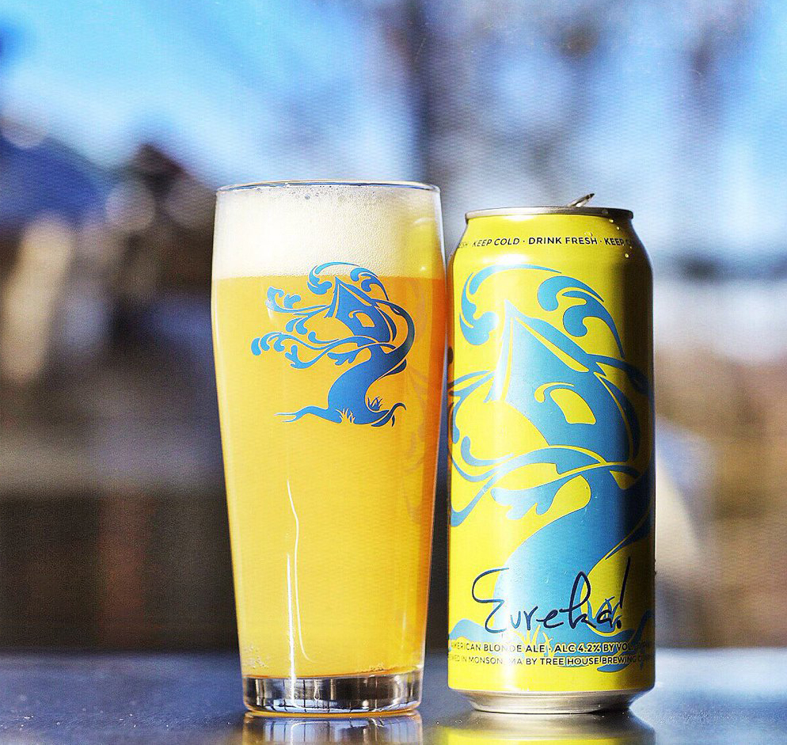

HOME
ALES
Backwoods Bastard Scotch Ale
Tree House Brewing Co.
Eureka w/ Citra explodes with citrus fruit on the nose and the palate, and finishes cleanly with light bits of cracker malt. Eureka is adequately kettle and dry hopped, resulting in a blonde ale that is hop saturated, yet delicate, refined, and pleasant to drink.
Tree House owns and operates three facilities. The primary brewery and coffee roastery is located in Charlton, Massachusetts. We maintain a brewery in Monson, Massachusetts, and a Farm Fermentory in Woodstock Connecticut.
Check out their site HERE 